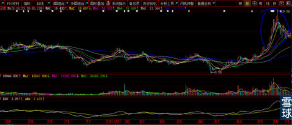
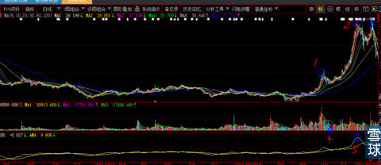

下图案例对今天你们手中持股“000767漳泽电力”有绝对的借鉴意义。
我前几天回复粉丝说：我就没有见过小尖顶会成为终极头部的，就如同你们手中的股票。例如下图所圈之处。其实它在做经典的股市之宝“老鸭头”。

经过一段时间，3个月后它就演变成下图这样。

你们看，位置1是个尖顶，大资金如何出货？就算大资金出货了，那么回落后，只要是基因好，新资金就会接手。位置4那个地方的成交量及其低迷。
位置2这个地方是头部，基本与我的“量度升幅”计算完全一致。
位置3这个地方形成大图形的典型双头，但是参与其中的广大散户被媒体的基本面报道引诱不止。可是下面DMA目视也不可能白线穿越黄线，“复合头部”就这样成立了，这才是真正的头部。
后面就是飞流直下三千尺。
这篇帖子是为被套在000767漳泽电力5.5元位置，没能及时撤退的“亲粉”专门而作。
 |
小尖顶是如何演变成老鸭头的？炒的是心 2015-01-15 23:30:12 |
Copyright © 1996-2014 SINA Corporation All Rights Reserved.